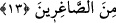

Yine ruhun üflenmesi sırasında Allah’ın onda tecellî etmiş olmasındandır. Nitekim
Rasûlullah (s.a.v.): “Allah Âdem’i yarattı ve onda tecellî etti.”[7] buyurmuştur.
İşte bu sırdan dolayı Allah Teâlâ Âdem (a.s.)’ın çamurdan olan kalıbını tesviye edip
ona şekil verdikten sonra, meleklere hemen ona secde etmelerini emretmemiştir. Bilakis
ona ruh üfledikten sonra emretmiştir. Nitekim Allah Teâlâ: “Rabb’in meleklere demişti
ki: “Ben çamurdan bir insan yaratacağım. Onu biçimlendirip ona ruhumdan
üflediğim zaman ona secdeye kapanın!” (es-Sâd, 38/71-72) buyurmuştur. Çünkü,
Âdem (a.s.) kendisine ruh üflendikten sonra tecellîyi kabul edecek hâle gelmiştir. Bu da
tecellîye müstehak olan ruhun letafet ve nûrâniyeti ile çamurun ilâhî feyzi kabul
etmesinden ve tecellî sırasında onu tutmasıyla gerçekleşmiştir. İşte bundan sonra
meleklerin kendisine secde etmesine müstehak hale gelmiştir. Çünkü o, hakiki Kâbe
hâline gelmiştir
13. Allah: Öyle ise, “İn oradan!” Orada büyüklük taslamak senin haddin değildir.
Çık! çünkü sen aşağılıklardansın! buyurdu.
Allah Teâlâ “buyurdu: “Öyle ise” ey İblis, “oradan in” cennetten çık. “Orada
büyüklük taslamak senin haddin değildir.” Bu doğru olmaz, buna hakkın yoktur. Bu
ifade, cennetten başka yerlerde kibirlenmenin caiz olacağı anlamına gelmez.
Ayette, “Cennet” kelimesinden önce “oradan” buyurularak onun yerini tutan zamirin
zikredilmesi, şeytanın orada meskûn olduğunun herkes tarafından bilinmesi
sebebiyledir.
Onlar Huld (ebedîlik) cennetinde değil, Adn cennetinde idiler. Âdem (a.s.) Adn
cennetinde yaratılmıştır.
İblis’e “oradan in” diye itab olunması, yaptığı suçun karşılığıdır.
“Çık,” İblis’e oradan aşağı inmesi emrinin te’kididir “çünkü sen aşağılıklardansın.”
Allah’a ve O’nun dostlarına karşı büyüklenmenden ötürü sen hakir ve zelil
olanlardansın.
Ayette Allah Teâlâ’nın İblis’i sırf isyanından ötürü değil kibirlenmesi sebebiyle
cennetten kovup indirdiğine dikkat çekilmektedir. Bir hadiste şöyle buyurulmuştur:
“Kim Allah için tevazu gösterirse; Allah onu yüceltir. Kim de böbürlenip, büyüklük
taslarsa; Allah onu aşağıların aşağısına indirir.”[8]
Mesnevî’de şöyle denilmiştir:
Ey mağrur ve sapık! Canında
Kendini kâmil sanmaktan daha beter bir illet yoktur